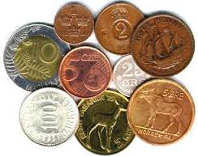

Краткая история монет

Если вы попытаетесь найти какую-либо информацию о монетах мира в энциклопедиях, вы непременно обнаружите одни и те же сведения - якобы монетам на протяжении истории человеческих цивилизаций были свойственны различные формы, различные весовые характеристики, и изготавливались они из разных, преимущественно износостойких материалов, ну и т.д. Но самая главная характеристика монеты как денежного знака заключается в том, что монета как таковая не зависимо от формы, веса, цвета направляла ход развития истории, именно монета во все времена была вершителем жизней и судеб.
Для коллекционеров, равно как и для историков, наибольшую ценность представляют монеты мира родом из далекого прошлого. Именно в седой и забытой древности божественная природа металлических денег и их экономическая значимость гармонично сосуществовали в сознании социума. Древние греки, например, интуитивно понимали колоссальную социальную значимость монеты и именно поэтому приписывали ее изобретение мифологическим героям, то есть существам божественным либо приближенным к божественному пантеону. Древние римляне, ничуть не сомневаясь, полагали, что появление монет стало возможным благодаря божественному вмешательству Януса и Сатурна. По их мнению, древние монеты украшенные головой двуликого Януса и носовой частью корабля, были, когда то выбиты Янусом в честь великого Сатурна, который приплыл с острова Крит в Италию на корабле. Слово «монета» переводится с латыни, не иначе как «советница». А титулом советницы в древнем Риме была наделена богиня Юнона, по совместительству жена громовержца Юпитера. Римляне в то время верили в то, что Юнона, была добра к людям и своевременно предупреждала их о землетрясениях или нападениях чужеземцев. Именно неподалеку от храма Юноны, древние римляне разместили мастерские, где отливались и чеканились монеты.
Касательно лидийских монет, относящихся к VI веку до н. э. были зафиксированы неоднократные упоминания Геродотом и другими авторами того факта что именно в этом малоазийском государстве появилась первая отчеканенная монета. На современном этапе развития истории и археологии, ученным доподлинно известно о том, что первые чеканные монеты берут начало именно в этой местности, приблизительно в 685 год до н. э. во времена правления царя Ардизе. Эти удивительные монеты изготавливались из природной смеси серебра и золота (электрум). Одна сторона монеты была увенчана головой ассирийского льва, на другой стояло некоторое подобие пробы. Два великих и изолированных от всего мира государства, таких как Китай и Индия свои монеты разрабатывали самостоятельно и именно поэтому они изначально не были ни на что похоже, ни по форме, ни по используемому материалу, ни по названию. Первые китайские монеты датируются XII веком до н. э, и, к сожалению, характеризовались лишь только региональным значением.
Говоря о русских монетах, следует учесть то, что самая ранняя монета имевшая хождение на этой территории датировалась 1655 годом. В данном случае речь идет о так называемом «ефимке». Что отличает эту монету от иностранных аналогов так это использование арабских цифр, повсеместно принятых на Руси. Наиболее распространенное применение ефимков предусматривалось на территориях, присоединенных к Украине, где население использовало преимущественно европейские (польские и др.) монеты, датированные арабскими цифрами, и от Рождества Христова. В России впоследствии начинает использоваться славянская цифирь с датировкой от Сотворения Мира, согласно византийской эре. И только начиная с 1700 года, монеты на Руси датируются от Рождества Христова. Этот процесс постепенно привел к полному вытеснению славянской цифири, и повсеместному распространению арабских цифр.
Монеты мира независимо от происхождения изготавливались из твердых и износостойких материалов, что поначалу сказывалось на незамысловатости и простоте форм, для простоты и эффективности обработки металлов монеты имели как правило, круглую, многоугольную и неправильную форму.
Все монеты мира, на более поздних этапах своего исторического развития имеют лицевую сторону, так называемый аверс, и соответственно оборотную сторону, так называемый реверс. Исключением из общего правила являются односторонние монеты, например распространенные в XII—XV веках брактеаты изготовленные из серебряных брусков. Но подобных замысловатых решений крайне мало в сравнении с монетами обыкновенной формы, поэтому будет неправильно посвящать подобным аномалиям отдельный абзац. Интересный факт, но до недавних пор, не было достигнуто единства по поводу какую сторону считать лицевой, а какую обратной. В старой нумизматической традиции лицевой стороной принято считать ту, где изображен правитель. На более поздних этапах развития нумизматики лицевой стороной монеты принято считать ту, которая благодаря орнаменту или изображению определяет государственную принадлежность монеты.
Для всех монет мира характерно наличие гурта. Гурт — это боковая поверхность монеты, связующий лицевую и оборотную сторону. Опять же занимательный факт из истории своим появлением гурт обязан мошенникам, которые время от времени обрезали драгоценный металл по к5раю монеты. Теперь же такая возможность пресекалась, так как по отсутствию гурта можно понять, что монета обрезана. В современных монетах гурт присутствует, но своей первоначальной утилитарной значимости уже не имеет.
Отдельная тема для разговора это фальшивые монеты мира. Да, к сожалению, они были, есть и будут, и поэтому они, несомненно, заслуживают отдельного упоминания. Фальшивые монеты подразделяются на два типа – фальшивая и поддельная. Вроде бы эти два термина близки по значению но, несмотря на это различие, причем существенное есть. Фальшивая монета изготавливалась из низкопробных материалов для того чтоб ее обманным путем реализовали как подлинную. Поддельные монеты изготавливались на гораздо более поздних этапах для реализации их в качестве подлинных антикварных вещей.
Некоторые подделки со временем сами становятся произведением искусства, а фальшивая монета им никогда не станет, оставаясь при этом символом низкопробности и нечестности.
По материалам сайта : http://narses.ru/